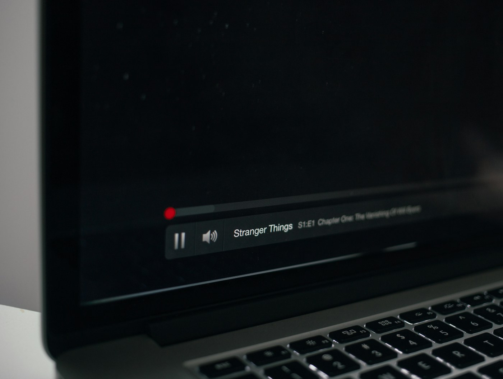

Click the add-on
The Firefox extension looks through the active tab and embedded frames to find the best HTML5 video.
Firefox add-on + local macOS helper
Install both parts: the Firefox add-on and the macOS helper. Then open a video, click the extension button, and keep the video floating while you work in other apps.
Both downloads are required. Beta for macOS. The helper is free, ad-hoc signed, and not Apple-notarized yet.

How it works
The Firefox extension looks through the active tab and embedded frames to find the best HTML5 video.
It connects to the helper app running on your Mac. The video data stays on your computer.
The helper opens a small always-on-top macOS window and keeps playback controls synced with Firefox.
Two playback paths
If Firefox sees a playable media URL, the helper plays that media itself. This keeps Firefox from capturing and re-encoding frames.
If no direct URL works, the extension can use video.captureStream() and MediaRecorder to send encoded WebM chunks locally.
Install
Install the browser button from Mozilla Add-ons. If the listing is still under review, check the GitHub release notes.
Open AMO listingChoose the build for your Mac, unzip it, and move the helper app to /Applications.
Right-click the helper app and choose Open. macOS may warn because this beta is not notarized.
View releasePrivacy
The extension does not use analytics, advertising, tracking, or a remote server. Video URLs, playback state, and fallback media chunks are sent only to the helper on your own Mac.
Current limits